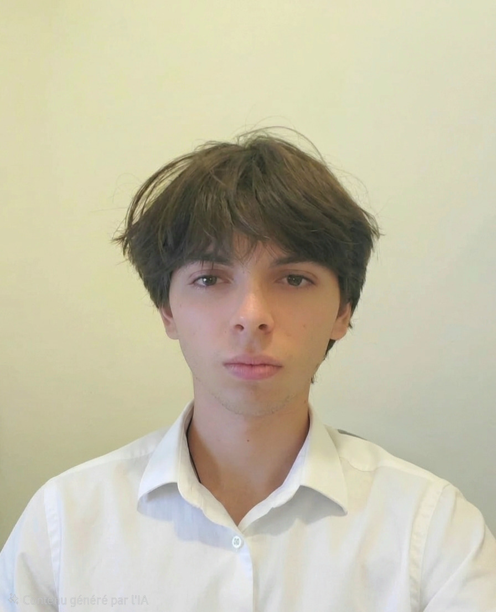

BUT Réseaux & Télécommunications — IUT de Sophia
Étudiant en 1re année de BUT R&T à l'IUT de Sophia-Antipolis, Je m’intéresse beaucoup aux réseaux, aux télécommunications et aux défis techniques. Ce site présente mes projets, mes compétences et mon parcours.

Qui suis-je
Mon parcours, mes motivations et ce qui me passionne au-delà des cours.
Je suis Paul DOGLIANI, étudiant en BUT Réseaux et Télécommunications en première année.
Depuis longtemps, le domaine du numérique m’intéresse profondément, et je prends aujourd’hui beaucoup de plaisir à développer ces compétences au sein de ma formation.
En dehors des études, ce qui me plaît le plus sont les randonnées, les bivouacs et le fait de passer du temps en pleine nature.
Dans le cadre de ma deuxième année de BUT, je serai à la recherche d’un stage dans le domaine du réseau.Ce que j'apprécie le plus dans ma formation c'est le développement web à l'aide de CSS3, HTML5 et PHP.
Réalisations
Mes projets académiques, personnels et techniques réalisés en BUT R&T.
Objectif : Installer et configurer l'ensemble du réseau informatique et de la sécurité pour une petite entreprise.
Outils utilisés : Logiciels de simulation réseau (Packet Tracer, GNS3) et matériel Cisco.
Résultat :Ce projet m’a permis de développer une compréhension concrète de l’architecture réseau, de renforcer mes compétences en configuration et sécurisation d’infrastructures, et de gagner en autonomie dans la mise en place de solutions professionnelles adaptées aux besoins d’une PME.
Objectif : Faire un bilan sur moi-même pour trouver la direction de ma future carrière et trouver les métiers qui me correspondent.
Résultat : Ce projet m'a permis d'avoir une meilleure vision de mon orientation.
Savoir-faire
Réseaux, télécommunications, développement web et outils acquis en formation.
Configuration des équipements, segmentation (VLANs), routage et mise en place de services (DHCP, DNS).
Installation de pare-feux, isolation logique (DMZ) et sécurisation globale des accès aux infrastructures.
Maîtrise des logiciels de modélisation Packet Tracer et GNS3, et manipulation de matériel Cisco IOS.
Travail collaboratif, capacité d'analyse personnelle (Méthode Ikigai), et esprit critique constructif.
Parcours
Stages, projets professionnels et autres expériences enrichissantes.
Dans le cadre de ma deuxième année de BUT R&T, je serai à la recherche d'une expérience immersive en entreprise pour mettre en pratique mes compétences en création et sécurisation des réseaux d'entreprise.
IUT de Sophia-Antipolis. Apprentissage intensif des bases de l'informatique, de l'ingénierie des réseaux, de la sécurité et de la définition de projet professionnel.
Me rejoindre
Intéressé par mon profil ? N'hésitez pas à me contacter pour échanger.
Je suis motivé à l'idée de mon futur stage en deuxième année. Si mon profil vous intéresse, vous pouvez copier mon adresse ci-dessous.
paul.dogliani@etu.univ-cotedazur.fr